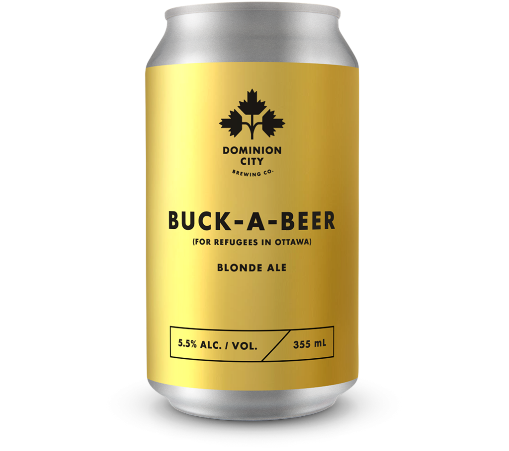

- Lunch Menu
-

Ravioli
Ravioli are a type of dumpling comprising a filling enveloped in thin pasta dough. -
Roast Sweetbread
is a culinary name for the thymus (also called throat, gullet, or neck sweetbread). -

Scallops from the Isle of Skye
Scallops diver harvested from the cool clear waters of Loch Sligachan then supplied to most of the fine-dining restaurants and hotels on the Isle of Skye. -
Pressed foie grass
Foie gras is considered a luxury food product made of the liver of a duck or goose that has been especially fattened.
-

Cured Sea Trout
Gin-cured sea trout with apple and fennel Prepare in advance if you have a party. -
Agnolotti
Agnolotti is a type of pasta typical of the Piedmont region of Italy, made with small pieces of flattened pasta dough, folded over a filling of roasted meat[1] or vegetables. -

Cote de Porc
This is a contemporary version of a classic pork dish, côtelettes de porc charcutèrie. -
Cornish Skate
The attention to detail in every aspect is beyond what I thought was possible. As we were seated, the table across from us was being cleared from the previous and prepped for the next.
-

Walnut Whip
Ravioli are a type of dumpling comprising a filling enveloped in thin pasta dough. -
Custard Tart
is a culinary name for the thymus (also called throat, gullet, or neck sweetbread). - BEVERAGES
-

Red Wine
Red wine is a type of wine made from dark-colored (black) grape varieties. -
BeerAlcohol
-
Red WineAlcohol
-
Red WineAlcohol
- DESSERTS
-
 Lemonade ParfaitMichael Jackson
Lemonade ParfaitMichael Jackson -
 Manjari Chocolate DeliceMichael Jackson
Manjari Chocolate DeliceMichael Jackson -
 Caramelised Apple Tart TatinMichael Jackson
Caramelised Apple Tart TatinMichael Jackson -
 Mont BlancMichael Jackson
Mont BlancMichael Jackson -
Hazelnut SouffleMichael Jackson